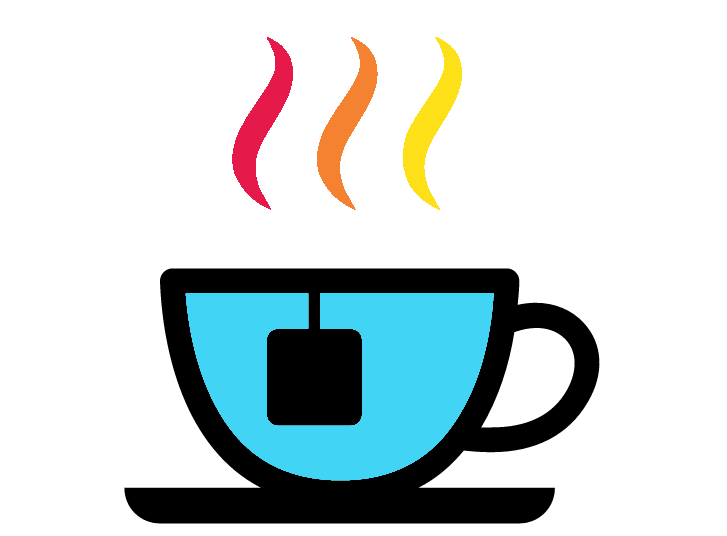

#Scalar string with mistake
sentence <- "The number 8 is spelt ate"
#gsub to print out line with mistake fixed
gsub(pattern = "ate", replacement = "eight", sentence)
#We can assign the scalar with the fix
sentence <- gsub(pattern = "ate", replacement = "eight", sentence)
#Vector with unwanted capital As
letter_vec <- c("A","Ab","Abc","Abcd")
#Replace pattern A with replacement a
letter_vec <- gsub(pattern = "A", replacement = "a", letter_vec)
#Vector with unwanted info after "_"
extra_info_vec <- c("A_some","B_nada","C_stuff","D_nill")
#Replace the _ and everything after it with nothing
#We signify this with ".*"
#This means any character (.) repeated zero or more times (*)
gsub(pattern = "_.*", replacement = "", extra_info_vec)
#What if we use gsub() with numerics?
gsub(pattern = 5, replacement = 2, 1:20)
#The output will be strings!Tea

We will have a quick look at the “tea_df”. This data shows the annual consumption of tea per capita with a rank based on the highest to lowest consumers.
Unfortunately the third column has the annual per capita consumption in kilograms (KG) and pounds (LB) with the two values separated by a “_“. Thankfully we can use the function gsub() to fix this.
gsub() will look for a specified pattern and replace it with a specified replacement. gsub() is only to be used for strings.
Before fixing our data frame I’ll show you some examples of gsub().
. and * are regular expressions. There are many regular expressions but we will only use .* to represent “all strings”. The best part about this is we can put the .* after a specific character to replace the specific character and everything after it. Alternatively we can put the .* before a specific character to replace the specific character and everything before it.
Let us carry this out with the “tea_df” so it will hopefully make more sense. We are going to do this so we can make a kilogram column and a pound column.
Note: Make sure you have the “tea_df” in your environment before proceeding.
#Create a column for lb (pound). We'll copy the KG_LB_annual_per_capita column
tea_df$lb <- tea_df$KG_LB_annual_per_capita
#For the lb column we'll replace the "_" and everything before it with nothing
tea_df$lb <- gsub(pattern = ".*_", replacement = "", tea_df$lb)
#Change the column name KG_LB_annual_per_capita to kg
colnames(tea_df)[3] <- "kg"
#For the kg column we'll replace the "_" and everything after it with nothing
tea_df$kg <- gsub(pattern = "_.*", replacement = "", tea_df$kg)
#Since the columns initially contained "_" they are string columns
#Check if this is correct with the str() function
str(tea_df)
#Change the kg and lb columns to numerics
tea_df$kg <- as.numeric(tea_df$kg)
tea_df$lb <- as.numeric(tea_df$lb)
#Check with str() to see if it is now numerics
str(tea_df)If you are interested in more regular expressions I would recommend looking at the following resources:
- https://r4ds.had.co.nz/strings.html#matching-patterns-with-regular-expressions
- https://raw.githubusercontent.com/rstudio/cheatsheets/main/regex.pdf